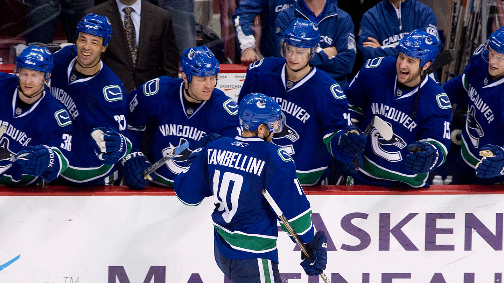

BEM VINDO AO
VANCOUVER CANUCKS
Os Canucks entraram na NHL em 1970 e rapidamente se tornaram o coração do hockey no oeste canadense. A história do time é marcada por uniformes icônicos (desde o "V" voador dos anos 80 até o atual "Orca" em azul e verde) e por uma torcida que vive o esporte com uma intensidade quase religiosa. O Rogers Arena é conhecido por ser um "caldeirão" onde o barulho é constante e a pressão sobre os adversários é implacável.
A franquia é famosa por suas corridas épicas até a final da Stanley Cup que terminaram em dramas inesquecíveis no Jogo 7, especialmente em 1994 e 2011. Essas derrotas moldaram uma torcida resiliente que aguarda ansiosamente pelo primeiro título. A era dos irmãos Sedin (Daniel e Henrik) transformou o estilo de jogo do time em algo artístico e cerebral, deixando um legado de elegância e lealdade que ainda ecoa em Vancouver.
Em 2026, o time está em uma fase de transição sob o comando do técnico Adam Foote. Após a saída do capitão Quinn Hughes em dezembro de 2025, o elenco passou por uma reformulação profunda para dar mais espaço aos jovens. Atualmente, os Canucks focam em um sistema defensivo mais rígido e em um ataque que aposta na velocidade dos seus novos calouros, tentando construir a base que finalmente trará a taça para o Pacífico canadense.
CONHEÇA OS
JOGADORES

Daniel & Henrik Sedin
Ala Esquerda/Central
2000–2018
AGENDA
26
28
31
1
2
6